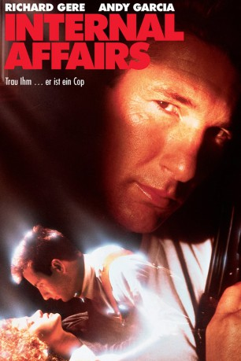

#10758 Internal Affairs - Trau' ihm, er ist ein Cop
Alternativ: Internal Affairs (Englischer Titel)
 
 IMDB-Wertung: 6.5 / 10
IMDB-Wertung: 6.5 / 10  Metascore: 63
Metascore: 63 
Der ehrgeizige Cop Raymold Avila wird in die Abteilung für Innere Angelegenheiten der Polizei von Los Angeles versetzt. Zusammen mit seiner neuen Partnerin soll er die Machenschaften des Kollegen Dennis Peck genauer unter die Lupe nehmen. Der scheint in eine ganze Reihe von zweifelhaften Aktionen verwickelt zu sein, doch Peck ist zu gewitzt, um sich auf Anhieb schnappen zu lassen.
Jahr: 1990
Dauer: 106 Minuten
FSK: 18
Land: USA Studio: Paramount PicturesTonspuren:
Untertitel:
Auflösung: 1080p (1920x1080) Größe: 6440 MB
Genre: Thriller, Drama, Krimi
Regisseur:  Mike Figgis
Mike Figgis
Drehbuch: Henry Bean
Soundtrack: Brian Banks, Mike Figgis, Anthony Marinelli
Darsteller:
Datei: X:\FSK18-1900-1999\Internal Affairs - Trau' ihm, er ist ein Cop (1990, FSK18, 1920x1080).mkv seit 22.02.2019
Festplatte: FSK18
 Es gibt insgesamt 108 Filme in der Gruppe 'FSK18-1900-1999'
Es gibt insgesamt 108 Filme in der Gruppe 'FSK18-1900-1999'